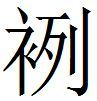
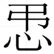

趙四
為齊獻書趙王
為齊獻書趙王，使臣與復丑〔一〕 曰：「臣一見，而能令王坐而天下致名寶〔二〕 。而臣竊怪王之不試見臣，而窮〔三〕 臣也。群臣必多以臣為不能者，故王重〔四〕 見臣也。以臣為不能者非〔五〕 他，欲用王之兵，成其私〔六〕 者也。非然〔七〕 ，則交有所偏者也；〔八〕 非然，則知不足者也；非然，則欲以天下之重恐王，而取行於王〔九〕 者也〔一〇〕 。臣以齊循〔一一〕 事王，王能亡燕，能亡韓、魏，能攻秦，能孤秦。臣以為〔一二〕 齊致尊名於王，天下孰敢不致尊名於王？臣以齊致地於王，天下孰敢不致地於王？臣以齊為王求名於燕及韓、魏，孰敢辭之？臣之能也，其前可見已〔一三〕 。齊先重王，故天下盡重王〔一四〕 ；無齊，天下必盡輕王也。秦之彊，以無齊之〔一五〕 故重王，燕〔一六〕 、魏自以無齊故重王〔一七〕 。今王無齊獨安得無重天下〔一八〕 ？故勸王無齊者，非知不足也〔一九〕 ，則不忠者也。非然，則欲用王之兵成其私者也；非然，則欲輕王以天下之重，取行於王者也；非然，則位尊而能卑者也〔二〇〕 。願王之熟慮無齊之利害也。」〔二一〕
〔一〕 姚本 曾無此以上五字。鮑本 無「使臣與復丑」五字。補曰：愚按，其文未詳，恐他簡脫誤。
〔二〕 鮑本 「寶」作「實」。即下「致地」。
〔三〕 鮑本 窮，猶困也。困於不得見。
〔四〕 鮑本 重，猶難。
〔五〕 鮑本 非，若無也。
〔六〕 鮑本 無「成其私」三字。
〔七〕 鮑本 無「非然」二字。
〔八〕 鮑本 言賣趙與諸國，焉私？
〔九〕 鮑本 無「於王」二字。補曰：姚本 云，「欲用王之兵，成其私者也。非然，則交有所偏者也；非然，則知不足者也；非然，則欲以天下之重恐王，而取行於王者也」。愚按，此文為是。
〔一〇〕 鮑本 王畏懼之，必行其說。
〔一一〕 姚本 曾作「脩」。
〔一二〕 鮑本 衍「為」字。
〔一三〕 鮑本 言可見於未效之前。
〔一四〕 鮑本 「王」下復有「重王」二字，原注「衍重字」。
〔一五〕 鮑本 無「之」字。
〔一六〕 鮑本 「燕」下補「韓」字。
〔一七〕 鮑本 趙得齊，故四國無齊。
〔一八〕 鮑本 猶四國重趙。
〔一九〕 鮑本 無「也」字。
〔二〇〕 鮑本 補曰：能卑者，才能卑下也。
〔二一〕 鮑本 此策 時不可考。
齊欲攻宋
齊欲攻宋〔一〕 ，秦令起賈〔二〕 禁之。齊乃捄〔三〕 趙以伐宋〔四〕 。秦王〔五〕 怒，屬怨於趙。李兌約五國〔六〕 以伐秦，無功，留天下之兵於成皋，而陰構〔七〕 於秦。又欲與秦攻魏，以解其怨〔八〕 而取封〔九〕 焉。
〔一〕 鮑本 閔三十八年，此十三年。正曰：閔二十八年。
〔二〕 鮑本 人姓名。
〔三〕 姚本 一作「收」。鮑本 「捄」作「援」。補曰：姚云，「捄」一作「收」，大事記 取。
〔四〕 鮑本 以趙自助。補曰：齊欲攻宋，乃收趙以助己，實未伐也，故趙李兌合五國以伐秦。大事記 ，赧王二十九年，先書趙李兌約五國伐秦，後書齊滅宋。解題 云，此大事也，見於策者，前後非一章。史 遺略不載，策 亦不載伐秦之年，然兵端起於秦怨趙助齊伐宋，故附齊滅宋年。
〔五〕 鮑本 昭。
〔六〕 鮑本 韓、趙、魏、燕、齊也。史 不書，獨趙策 見之。補曰：大事記 書楚、齊、趙、韓、魏。按魏策 「五國約而攻秦，楚王為從長，不能傷秦，兵罷而留成皋」，與此李兌約五國攻秦無功，留天下兵於成皋語合。又謂兌雖主謀，楚猶以大國為從長，據此故也。按楚王為從長，乃懷王十一年，蘇秦約楚、齊、趙、韓、魏、燕伐秦也。秦紀 無楚，年表 無齊，故以五國稱。楚世家 書特詳。諸侯至函谷關，擊秦不勝而歸，其事又相類。兵罷留成皋一語，記者遂誤附之，非李兌合從時也。按兌伐秦時，當楚頃襄王十二年，十年楚迎婦于秦，十四年與秦昭王好會于宛，中間未嘗搆兵。大事記 據下章書楚、齊、趙、韓、魏，又據魏策 ，因遂長楚。考之下章，雖有楚而不明言在五國之數，後亦屢言燕，是時固有燕矣。又此章勸齊劫天下，未及秦而後楚。下章云，齊將攻宋，秦、楚禁之，可見秦、楚方睦，必無楚伐秦之事矣。鮑以五國為韓、趙、魏、燕、齊者得之，然趙當首書。
〔七〕 姚本 曾作「講」字。鮑本 「搆」作「講」。補曰：大事記 同，以下有「已講」字故也。
〔八〕 鮑本 解秦怨。
〔九〕 鮑本 自封之封，非封地。正曰：下文言取陰定封。
魏王〔一〕 不說。之齊〔二〕 ，謂齊王曰：「臣為足下謂魏王曰：『三晉皆有秦患。今之攻秦也，為趙也〔三〕 。五國伐趙，趙必亡矣〔四〕 。秦逐李兌〔五〕 ，李兌必死。今之伐秦也，以救李子之死也。今趙留天下之甲於成皋，而陰鬻之於秦，已講，則令秦攻魏以成其私封，王之事趙也何得矣？且王嘗濟於漳，而身朝於邯鄲，抱陰、成〔六〕 ，負蒿〔七〕 、葛、薜〔八〕 ，以〔九〕 為趙蔽，而趙無為王行也。今又以何〔一〇〕 陽、姑密〔一一〕 封其子〔一二〕 ，而乃令秦攻王，以便取陰〔一三〕 。人比然而後如〔一四〕 賢不，如王〔一五〕 若用所以事趙之半收齊，天下有敢謀王者乎？王之事齊也，無入朝之辱，無割地之費。齊為王之故，虛國〔一六〕 於燕、趙之前，用兵於二千里之外，故攻城野戰，未嘗不為王先被矢石也。得二都，割河東，盡效之於王。自是之後，秦攻魏，齊甲〔一七〕 未〔一八〕 嘗不歲至於王之境也。請問王之所以報齊者可乎？韓呡〔一九〕 處於趙〔二〇〕 ，去齊三千里，王以此疑齊〔二一〕 ，曰有秦陰〔二二〕 。今王又挾故薛公以為相〔二三〕 ，善韓徐以為上交，尊虞商以為大〔二四〕 客，王固可以反疑〔二五〕 齊乎〔二六〕 ？』於〔二七〕 魏王聽此言也甚詘〔二八〕 ，其欲事王〔二九〕 也甚循〔三〇〕 。其怨於趙〔三一〕 。臣願王〔三二〕 之曰〔三三〕 聞魏〔三四〕 而無庸見惡也，臣請為王推其怨於趙〔三五〕 ，願王之陰重〔三六〕 趙，而無使秦之見王之重趙也。秦見之且亦重趙〔三七〕 。齊、秦交重趙，臣必見燕與韓、魏亦且重趙也，皆且無敢與趙治〔三八〕 。五〔三九〕 國事趙，趙從親以合於秦，必為王高矣〔四〇〕 。臣故欲王之偏劫天下，而皆私甘之也〔四一〕 。王使臣以韓、魏與燕劫趙，使丹〔四二〕 也甘之；以趙劫韓、魏〔四三〕 ，使臣〔四四〕 也甘之；以三晉劫秦，使順也甘之；以天下劫楚，使呡也甘之。則天下皆偪秦以事王，〔四五〕 而不敢相私也。交定，然〔四六〕 後王擇焉。」〔四七〕
〔一〕 鮑本 昭。
〔二〕 鮑本 「齊」下補「人」字。正曰：大事記 ，魏王不說，齊人謂王云云。愚謂，「之齊」上有缺文，當是人姓名。
〔三〕 鮑本 本以秦屬怨於趙故。
〔四〕 鮑本 此設辭也。言趙初約伐秦，今乃與秦講，若同伐趙，趙可亡也。
〔五〕 鮑本 「秦」作「齊」。講秦、背齊、不伐宋者，兌也。正曰：姚本 作「秦逐」。大事記 取。
〔六〕 鮑本 成屬涿郡。又孔子世家 注，太山鉅平有武城。正曰：陰、成未詳，鮑注皆非魏地。
〔七〕 鮑本 地缺。
〔八〕 鮑本 「薜」作「薛」，又改作「孽」。趙記 注，在馬丘。又葛城在高陰，屬涿郡。補曰：當作「孽」。正曰：抱、負言其勢。按魏策 ，葉陽君約魏，魏王將封其子，謂魏王曰，「王嘗身濟漳，朝邯鄲，抱葛、薛、陰、成以為趙養邑」。據此文，則「蒿」字因「葛」而誤衍。四邑皆魏地。趙世家 ，「遇于葛孽」，則知此文「薛」字誤也。徐廣云者，在馬丘。正義 引括地志 云也□□□□□魏縣西南。札记 丕烈案：「薛」即「孽」字也。
〔九〕 鮑本 無「以」字。
〔一〇〕 鮑本 「何」作「河」。屬河內。札记 今本「何」作「河」。
〔一一〕 鮑本 「密」，「蔑」同。魯卜縣有姑蔑城，地未詳。
〔一二〕 鮑本 兌子。正曰：說見後。
〔一三〕 鮑本 正曰：以下三章俱有。三其文，則時欲文木而取此乃宋地也。傳 昭十九年，公尹赤遷陰于下陰，乃襄之□□□□□非此所指也。齊策 ，三子說齊王伐宋之三曰，有大平陸則梁門不啟。□□□□南陽則亦指在六成者誤矣。史記 作陶、平陸。蓋平陸，兗州縣；定陶，今會州。皆大梁之東，時皆有宋也之定□□□□□□也。濟陰之名後出，抑□□□□□歟？按史 □□□封陶，徐廣曰，「陶」一作□□□□□曰「陰必亡」，史 作「陶邑必亡」。魏策 「陰啟」，史 作「陶人」。是云「陶」、「陰」字易惑。定陶見有魏冉冢。作陰者誤。是直以□字誤，此說是也。劉歆七略 云，古文□□以陶為陰，然則陰之為陶信矣。〔校一〕
〔一四〕 鮑本 「如」作「知」。言人必以類比乃可知。
〔一五〕 鮑本 言如今王者。正曰：下有「若」字，「如王若用」不成語，當以「王」字句。言人類相比，知賢以如王。札记 丕烈案：吳說未是。此「如」、「若」二字，當衍其一。
〔一六〕 鮑本 虛國，謂悉出兵。
〔一七〕 鮑本 無「甲」字。補曰：一本「齊甲」。
〔一八〕 姚本 曾、劉作「不」。
〔一九〕 姚本 劉「呡」一作「岷」。鮑本 「呡」作「珉」。從韓策 ，後並同。正曰：「珉」、「呡」未知孰訛，且當各依本文。
〔二〇〕 姚本 劉「趙」作「楚」。鮑本 珉下皆齊人之去齊者。正曰：韓呡必韓人。韓策 云，呡相齊。趙將有韓徐，趙世家 惠文十三年。虞商無見。除薛公為齊人，餘無考。
〔二一〕 鮑本 珉處趙，意別有謂。以其相趙，疑齊親趙。
〔二二〕 鮑本 疑齊親趙，因私於秦，以趙嘗講秦也。
〔二三〕 鮑本 史 稱文去齊如魏，在閔王三十八年後。按此，則其如魏，以齊王驕也。伐宋前，已去齊矣。正曰：大事記 ，孟嘗君去齊相魏，在赧王二十九年齊滅宋前，說見東周策 。
〔二四〕 姚本 劉「大」作「一」。
〔二五〕 鮑本 「固」作「顧」，「疑」下有「於」字。
〔二六〕 鮑本 用齊之所不善，失在魏也，安可疑齊？補曰：此語大事記 取。
〔二七〕 鮑本 補曰：此下恐當有「是」字。札记 丕烈案：此當是「疑」下有「於」字，錯在「乎」下。
〔二八〕 鮑本 此下，此士自陳其說魏之效。詘，猶順。正曰：韻書，詘，辭塞也。
〔二九〕 鮑本 齊王。
〔三〇〕 姚本 曾「循」作「脩」。
〔三一〕 鮑本 言其事齊，比於怨趙則又順也。正曰：「循」，姚云曾作「脩」，則當屬上文。愚謂，以「甚循」句，文勢順。「於趙」下有缺文，或「其怨於趙」句因下文衍。札记 丕烈案：吳說非也。此「其」字乃「甚」字之誤，四字為一句。
〔三二〕 鮑本 「臣願王」之「王」，謂齊王。下並同。
〔三三〕 鮑本 「曰」作「亟」。補曰：一本作「重」，是。
〔三四〕 鮑本 與魏相聞。
〔三五〕 鮑本 推，猶移。怨，魏怨。
〔三六〕 鮑本 元作「曰」，又改作「重」。補曰：上例，字當是「重」。
〔三七〕 鮑本 天下得趙則強。使秦知齊重趙，恐齊強，亦必重之。
〔三八〕 鮑本 治，猶校。
〔三九〕 鮑本 「五」作「三」。
〔四〇〕 鮑本 言趙居齊上。
〔四一〕 鮑本 「偏」作「遍」。私，則所謂無使見也。甘，言說之。補曰：遍劫者，眾脅之以威。私甘者，獨說之以言。
〔四二〕 鮑本 丹、順皆人名。
〔四三〕 鮑本 此下皆且甘且劫。
〔四四〕 姚本 一作「甘」。
〔四五〕 鮑本 自以見偪於秦也。秦於天下，有偪而已，不如齊之有劫有甘也。正曰：相與偪秦也。偪者，侵迫也。
〔四六〕 鮑本 「然」作「而」。
〔四七〕 鮑本 此章亦可為齊，姑因舊。
〔校一〕 吳氏「正曰」主要說明：陰是宋地，陰即陶。但注文脫漏甚多，難以校清，只能根據現存文字，點其大意，僅供參考。
齊將攻宋而秦楚禁之
齊將攻宋，而秦、楚〔一〕 禁之。齊因欲與趙，趙不聽。齊乃令公孫衍說李兌〔二〕 以攻宋而定封焉。李兌乃謂齊王〔三〕 曰：「臣之所以堅三晉以攻秦者，非以為齊得利秦之毀也〔四〕 ，欲以使攻宋也。而宋置太子以為王，下親其上而守堅，臣是以欲足下之速歸休士民也。今太子走，諸善太子者，皆有死心〔五〕 。若復攻之，其國必有亂，而太子在外，此亦舉宋之時也。
〔一〕 姚本 一作「陰」。
〔二〕 鮑本 正曰：下「李兌」二字必誤。下云「使公孫衍說奉陽君」，即述上文「令公孫衍說李兌」也。其下豈得為兌言乎？又後有「循燕觀趙」語，以為兌言，則不通。札记 丕烈案：吳氏定奉陽君為李兌，其說最確。元和顧氏廣圻曰，「此下皆當為蘇代謂齊王語，當是李兌下有缺文也」。說詳其所著思適齋筆記 。
〔三〕 鮑本 閔。
〔四〕 鮑本 不以毀秦為齊之利。
〔五〕 鮑本 太子為王及走，史不書。太子為王矣，而走，必王之黨逐之，故太子之人，以死報之。
「臣為足下使公孫衍說奉陽君〔一〕 曰：『君之身老矣，封不可不早〔二〕 定也。為君慮封，莫若於宋，他國莫可。夫秦人貪，韓、魏危〔三〕 ，燕、楚辟〔四〕 ，中山〔五〕 之地薄，莫如於陰。失今之時，不可復得已。宋之罪重，齊之怒深，殘亂宋，得〔六〕 大齊，定身封，此百代之一時也。』以〔七〕 奉陽君甚食〔八〕 之，唯〔九〕 得大封，齊無大異〔一〇〕 。臣願足下之大發攻宋之舉，而無庸致兵，姑待已耕〔一一〕 ，以觀奉陽君之應足下也。縣〔一二〕 陰以甘之，循〔一三〕 有燕以臨之，而臣待忠之封〔一四〕 ，事必大成。臣又願足下有地效於襄安君〔一五〕 以資臣也。足下果殘宋，此兩地〔一六〕 之時也，足下何愛焉？若足下不得志於宋，與國何敢望也〔一七〕 。足下以此資臣也，臣循燕觀〔一八〕 趙，則足下擊潰而決天下矣〔一九〕 」。〔二〇〕
〔一〕 鮑本 蘇秦從時，已言奉陽死，豈或襲稱如馬服者乎？補曰：按史·蘇秦傳 ，趙肅侯令其弟成為相，號奉陽君。弗說秦，秦去之燕。奉陽君死，秦復說肅侯稱奉陽君捐館舍。而張儀之說武靈王，亦謂先王時奉陽君相，專權擅勢，蔽晦先王。然武靈胡服，請於公叔成，而成與李兌弒主父，則是肅侯之世，成未亡，何其前後相戾邪？故大事記 從古史 ，定以奉陽君為公子成，而削去「捐館」之語。考之策，屢言奉陽君，而趙策 尤著，見於李兌約五國伐秦後謀取宋之時。蘇秦說趙，當肅侯十六年，而五國伐秦，在惠文十三年，相去五十年，公子成執國柄何久也！史 、策 明言捐館舍，豈得皆誤？武靈易服之請，猶惓惓敬事其答，張儀豈得公言其罪而無所諱哉？荀子 以奉陽君為篡臣，而楊倞注，亦疑非公子成，蘇秦所值者，必別一奉陽君，非公子成明矣。然則奉陽君果公子成乎？曰，謂奉陽君為公子成，亦史遷之言，而策 無明文也。五國攻秦時，成、兌方並用，以成為奉陽君，其時則可矣。愚嘗反覆策 文而有疑焉。趙策 言「李兌約伐秦，無功，陰講於秦，欲與秦攻魏以解怨，取陰以定封」。又云「齊令公孫衍說李兌以攻宋定封」。又云「公孫衍說奉陽君，封地莫善於宋，莫如於陰」。又「蘇代謂齊王，臣為足下說奉陽君，天下散而爭秦，陰必不可得」。既言李兌取陰，又言奉陽君取陰，不應為二人事。竊以為李兌即奉陽君也。何以明之？趙策 ，說魏之辭曰「李兌留天下之甲於成皋，令秦攻魏，以成其私，王嘗身朝邯鄲，抱陰、成，負葛、櫱，為趙蔽，今又以河陽、姑密封其子」。魏策 則曰「葉陽君約魏，魏王將封其子，謂魏王曰」云云，正與前同。則知「葉陽」者「奉陽」之訛。奉陽君之為李兌，其徵一也。趙策 ，蘇代說奉陽之辭曰「五國願得趙，與韓氏大吏東勉，齊王必無召（原作『名』，有說，見本條）呡」。燕策 ，蘇代舉奉陽君之辭曰「齊王使公王曰命說曰，必不反韓呡，今召之矣」。其事亦同。奉陽自稱說，「說」者「兌」之訛。奉陽君之為李兌，其徵二也。燕策 又有「奉陽君李兌甚不取蘇秦」之言，奉陽君李兌者，並舉其封邑姓名言之也。其下誤以蘇代為蘇秦，則亦因蘇秦所云而然，說見本條。奉陽君之為李兌，其徵三也。按趙世家 ，公子成、李兌既殺公子章、田不禮而定王室，公子成為相，號安平君，則安平乃成之封。史 表「安平屬涿郡」，後志 「青州有安平縣，原屬定州」，皆趙地也。奉陽則未有考而非奉陽矣。史 遷不明奉陽君為二人，又誤以為公子成，是以紛紜殽舛，論者莫知所從。今以策 文考之，而得其說如此。餘見各章，可參觀也。
〔二〕 鮑本 「早」上有「可」字。
〔三〕 鮑本 近秦故。
〔四〕 鮑本 「辟」作「僻」。札记 丕烈案：「辟」、「僻」同字，鮑改非。
〔五〕 鮑本 補曰：時中山已滅，此言其故地爾。
〔六〕 鮑本 「得」作「德」。補曰：「得」字訛。
〔七〕 鮑本 「以」作「已」。
〔八〕 鮑本 「食」作「貪」。補曰：恐「貪」字訛。
〔九〕 姚本 曾作「雖」。
〔一〇〕 鮑本 言奉陽欲得陰以大其封，而齊待之未有異數，不可。
〔一一〕 鮑本 無「姑待已耕」四字。
〔一二〕 鮑本 許之而未與，故曰「縣」。
〔一三〕 鮑本 循，言與燕順；臨，猶制也。不徒甘之，必或制之。
〔一四〕 鮑本 待，猶將。忠，猶實也。王待之封而己實之。正曰：勸之定封，故曰臣且將忠之以封。
〔一五〕 鮑本 蓋趙人。正曰：無考。
〔一六〕 鮑本 言有齊又得宋。正曰：兩地，言齊與趙可並得宋地。此謂齊王言，豈得言有齊乎？
〔一七〕 鮑本 與國，趙也。言奉陽、襄安不敢望封。正曰：上言兩得地，此言齊不得志，則趙不敢望。
〔一八〕 鮑本 觀，言其無所事。
〔一九〕 鮑本 潰，潰癰也。蓋喻其制天下之易也。決，猶制。正曰：潰，壞也。此喻宋。擊潰壞之宋，而決制天下矣。
〔二〇〕 鮑本 補曰：公孫衍為秦相而逐，在秦武王四年，武靈王之十九年也。後為魏所殺，雖不知何年，然去李兌合從時已遠，此公孫衍恐非犀首也。考之秦策 ，亦有「宋罪重，此百世之一時已」數語，彼以為穰侯之言，亦此時事也。說見後。「為足」、「為君」之「為」，去聲。
五國伐秦無功
五國伐秦無功，罷於成皋。趙欲搆〔一〕 於秦，楚與魏、韓將應之，秦〔二〕 弗欲。蘇代謂齊王〔三〕 曰：「臣以〔四〕 為足下見奉陽君矣。臣謂奉陽君曰：『天下散而事〔五〕 秦，秦必據宋。魏冉必妒君之有陰也。秦王貪，魏冉妒，則陰不可得已矣。君無搆，齊必攻宋。齊攻宋，則楚必攻宋，魏必攻宋，燕、趙助之。五國據宋，不至一二月，陰必得矣。得陰而搆，秦雖有變，則〔六〕 君無患矣〔七〕 。若不得已而必搆〔八〕 ，則願五國復堅約〔九〕 。願〔一〇〕 得趙〔一一〕 ，足下雄〔一二〕 飛，與韓氏大吏東免〔一三〕 ，齊王必無召〔一四〕 呡〔一五〕 也。使臣守約，若與〔一六〕 有倍〔一七〕 約者，以四國攻之。無倍約者，而秦侵約，五國復堅而賓〔一八〕 之。今韓、魏與齊相疑也，若復不堅〔一九〕 約而講〔二〇〕 ，臣恐與國之大亂也。齊、秦非復合也，必有踦重者矣〔二一〕 。後合〔二二〕 與踦重者，皆非趙之利也。且天下散而事秦，是秦制天下也。秦制天下，將何以天下為〔二三〕 ？臣願君之蚤計也。
〔一〕 鮑本 「搆」作「講」。原從扌從冓。下同。正曰：本文惟「堅約而講」、「君必無講」二處作「講」字，今當悉從舊。
〔二〕 鮑本 「秦」作「齊」。
〔三〕 鮑本 閔。
〔四〕 鮑本 「以」作「已」。
〔五〕 鮑本 「事」作「爭」。「爭」一作「事」，爭先事之。
〔六〕 鮑本 無「則」字。
〔七〕 鮑本 趙非不可以與秦講，而不可獨講，獨講則示秦弱，秦必輕之。今助四國攻宋而得陰，是五國為一也，不懼秦矣。
〔八〕 鮑本 據此時，趙可以無講，故云。正曰：不得已而必講，非可以無講也。疑此句「已」字誤，上句「得陰而講」，此句當云「不得陰而必講」，乃順。
〔九〕 鮑本 同伐秦也，先伐後講，則不示弱。
〔一〇〕 鮑本 「願」上補「五國」二字。
〔一一〕 鮑本 時趙強故。
〔一二〕 鮑本 雄者，眾雌所從。
〔一三〕 鮑本 「免」作「勉」。補曰：「勉」即「免」，通。
〔一四〕 鮑本 「召」作「名」，「名」下補「禁」字。正曰：姚本 「必無召呡也」，此「名」字訛，當作「召」。
〔一五〕 鮑本 「呡」作「珉」。下同。前齊嘗使韓珉處趙，有秦私也。今五國約講秦，勉齊同之，諸國必無辭止珉，使無私秦。正曰：燕策 ，蘇代說燕之辭曰「奉陽君告朱讙與趙足曰，齊王」云云，「必不反韓呡，今召之矣」。此「名」字，當作「召」無疑。前策言韓呡處趙，魏疑齊有秦私。韓策 ，秦王曰「韓呡與我交」，又云「韓呡相齊」。此下文云，「天下爭秦，秦內韓呡於齊」。呡，蓋韓人之善於齊、秦者。今代勸奉陽君合諸侯，與韓氏大吏勉齊王共合從，則齊必不召呡也。
〔一六〕 鮑本 「與」下有「國」字。秦本非與，今講必使之如與也。正曰：與國，言五國也。故云有倍約者，則四國攻之；無倍約者，而秦侵敗約，則五國復堅擯之。札记 今本「與」下有「國」字。
〔一七〕 鮑本 倍，並音背。
〔一八〕 鮑本 「賓」作「儐」。補曰：「擯」通。莊子 「賓於鄉里」。
〔一九〕 姚本 曾無「堅」字。
〔二〇〕 鮑本 此因舊。
〔二一〕 鮑本 「踦」作「觭」。下同。角一俯一仰曰觭，言有一重。正曰：公羊傳 「踦閭」，何休說，開一扇，閉一扇，一人在內，一人在外，曰「踦」。說苑 「切踦」即「倚」字。義皆訓偏。
〔二二〕 鮑本 補曰：「後合」，即上「復合」。札记 丕烈案：「後」乃「復」形近之訛耳。
〔二三〕 鮑本 天下自為秦用，趙無所用之也。
「『天下爭秦〔一〕 有六舉，皆不利趙矣。天下爭秦，秦王〔二〕 受負海內之國〔三〕 ，合負親之交〔四〕 ，以據中國，而求利於三晉，是秦之一舉也。秦行是計，不利於趙，而君終不得陰，一矣。天下爭秦，秦王內韓珉〔五〕 於齊，內成陽君於韓，相魏懷於魏〔六〕 ，復合衍〔七〕 交兩王〔八〕 ，王賁、韓他〔九〕 之曹〔一〇〕 ，皆起而行事，是秦之一舉也。秦行是計也，不利於趙，而君又〔一一〕 不得陰，二矣。天下爭秦，秦王受齊受趙，三疆三親〔一二〕 ，以據〔一三〕 魏而求〔一四〕 安邑，是秦之一舉也。秦行是計，齊、趙應之，魏不待伐，抱安邑而信〔一五〕 秦，秦〔一六〕 得安邑之饒，魏為上交，韓必入朝秦，過趙已安邑矣〔一七〕 ，是秦之一舉也〔一八〕 。秦行是計，不利於趙，而君必不得陰，三矣。天下爭秦，秦堅燕、趙之交，以伐齊收楚，與韓呡而攻魏〔一九〕 ，是秦之一舉也。秦行是計，而燕、趙應之。燕、趙伐齊，兵始用〔二〇〕 ，秦因收楚而攻魏〔二一〕 ，不至一二月，魏必破矣。秦舉安邑而塞女戟〔二二〕 ，韓之太原絕〔二三〕 ，下軹〔二四〕 道、南陽、高〔二五〕 ，伐魏，絕韓，包二周，即趙自消爍〔二六〕 矣。國燥〔二七〕 於秦，兵分〔二八〕 於齊，非趙之利也。而君終身不得陰，四矣。天下爭秦，秦堅三晉之交攻齊，國破曹〔二九〕 屈〔三〇〕 ，而兵東分〔三一〕 於齊，秦桉兵攻魏，取安邑〔三二〕 ，是秦之一舉也。秦行是計也，君桉〔三三〕 救魏，是以攻齊之已弊，救〔三四〕 與秦爭戰也；君不救也，韓、魏焉免西合〔三五〕 ？國在謀之中〔三六〕 ，而君有〔三七〕 終身不得陰，五矣。天下爭〔三八〕 秦，秦按為義，存亡繼絕，固危扶弱，定無罪之君，必起中山與勝〔三九〕 焉。秦起中山與勝，而趙、宋同命〔四〇〕 ，何暇言陰？六矣。故曰君必無講，則陰必得矣。』
〔一〕 鮑本 補曰：「爭秦」，一本此下皆作「事秦」。
〔二〕 鮑本 昭。
〔三〕 鮑本 衍「內」字。山東皆負海。正曰：三晉非負海也，恐「負」字因下文衍。
〔四〕 鮑本 天下嘗橫而親秦矣。已而負之，今復合之。
〔五〕 札记 「珉」，鮑本作「呡」，改為「珉」。
〔六〕 鮑本 此皆其國人之與秦事者，故秦納之。正曰：韓呡非齊人。
〔七〕 姚本 劉作「術」。鮑本 公孫衍時相魏，雅不善秦。今相懷，因使合之。正曰：公孫衍非犀首，說見前。
〔八〕 鮑本 秦、魏。正曰：上言齊、韓、魏，此兩王謂燕、趙也。
〔九〕 鮑本 此皆秦人。正曰：韓他恐韓人，餘無考。
〔一〇〕 鮑本 「曹」作「楚」。正曰：曹，輩也。下有「皆」字，文勢宜然。五國必無楚。
〔一一〕 鮑本 無「又」字。
〔一二〕 鮑本 「疆」作「強」。此三皆強國自相親。札记 今本「疆」作「彊」。
〔一三〕 鮑本 據，猶臨之。
〔一四〕 鮑本 秦求之。
〔一五〕 鮑本 「信」作「倍」。此倍益也。
〔一六〕 姚本 劉無下「秦」字。
〔一七〕 鮑本 過，猶勝也。言秦行此策 ，不論其他，止得安邑，已勝於趙矣。補曰：「已」，「以」通。言秦之勝趙，以得魏之安邑。按，魏獻安邑，在赧王二十九年。大事記 書於五國伐秦之前。據此策 ，則伐秦後事也。
〔一八〕 姚本 一本無上六字。鮑本 無「是秦之一舉也」六字。
〔一九〕 鮑本 伐齊得之，則呡為用。正曰：前言內韓呡於齊者，謀如此也。呡自善於秦者，前時魏疑有秦私，必不合於魏，故使之攻魏。
〔二〇〕 鮑本 交鋒之初。
〔二一〕 鮑本 三國交鋒，勢不得解，故得以此時收攻二國。
〔二二〕 鮑本 地缺。正曰：女戟，地名，在太行西。
〔二三〕 鮑本 補曰：太原，正義 以為太行，當是，說見燕策 。札记 今本「絕」上誤衍「之」字。
〔二四〕 鮑本 「軹」作「咫」，又改為「軹」。補曰：說見前。札记 「軹」，鮑本作「咫」，改為「軹」。
〔二五〕 鮑本 「高」作「而」。補曰：疑字有誤。札记 今本「高」作「而」，乃誤涉鮑也。
〔二六〕 姚本 劉本無「爍」字。
〔二七〕 姚本 一作「爍」。鮑本 燥，猶爍。
〔二八〕 姚本 一作「孤」。
〔二九〕 鮑本 「曹」作「財」。補曰：一本作「財」。札记 今本「曹」作「財」，乃誤涉鮑也。
〔三〇〕 鮑本 三晉破屈也。
〔三一〕 鮑本 兵分謂魏。正曰：謂三晉。
〔三二〕 鮑本 「桉」作「按」，下同。此與上始用兵而攻收同。正曰：不同。
〔三三〕 鮑本 按，謂安然。正曰：即上文「按兵」之「按」。
〔三四〕 鮑本 「救」下補「之而」二字。補曰：一本無「救」字。「救」即「敝」字訛衍。札记 今本「救」下有「之而」二字，乃誤涉鮑也。
〔三五〕 鮑本 合，合秦。補曰：焉，於虔切。
〔三六〕 鮑本 在秦謀中。
〔三七〕 姚本 劉作「又」。鮑本 有，猶又。
〔三八〕 姚本 一作「事」。
〔三九〕 鮑本 勝，中山之後。正曰：無據。
〔四〇〕 鮑本 此時宋小弱。言趙失中山，聽命於秦，與宋同也。
「奉陽君曰：『善。』乃絕和於秦，而收齊、魏以成取陰。」〔一〕
〔一〕 鮑本 補曰：蘇代為燕反間，勸齊伐宋，將以敝齊，其勸趙之共攻者，恐趙之合秦，而齊、秦方惡爾。然趙卒不合齊伐宋者，害齊之驕而止歟？抑別有故也？按燕策 ，蘇代說燕於趙以伐齊，奉陽君不聽，乃入齊惡趙，令齊絕於趙。又代謂燕昭王曰，「臣離齊、趙，齊、趙已孤矣」。趙之不合齊，其後竟合燕以破齊，殆以此歟？大事記 ，齊湣王與魏、楚滅宋，三分其地，魏得其梁、陳留；齊得其濟陰、東平；楚得其沛。考之史·年表 、齊 、魏世家 ，皆止言齊滅宋。獨宋世家 稱與楚、魏伐宋，三分其地。此大事記 所據也。按蘇代說燕之辭曰，「齊王南攻楚，西困秦，又以其餘兵舉五千乘之勁宋」。謂秦之辭曰，「攻宋所以為王也，齊強輔之以宋，楚、魏必恐，恐必西事秦」。使當時齊與楚、魏合，其言豈若是乎！史稱齊既滅宋，南割楚之淮北，西侵三晉，是其乘滅宋之強，併奪楚、魏地，而謂與之分宋地，豈其實哉？樂毅勸燕昭王約趙、楚、魏伐齊，其言曰，「主若欲攻齊，莫若結於趙，且又淮北、宋地，楚、魏之所欲也」。年表 ，燕破齊之年，書楚、趙取齊淮北。大事記 因之。按此言則楚、魏分地，當是樂毅破齊後事，宋世家 所記者，豈非誤邪？
樓緩將使伏事辭行
樓緩將使，伏事，辭行〔一〕 ，謂趙王曰：「臣雖盡力竭知，死不復見於王矣。」王曰：「是何言也？固且為書而厚寄卿。」樓子曰：「王不聞公子牟夷〔二〕 之於宋乎？非肉不食〔三〕 。文張〔四〕 善宋〔五〕 ，惡公子牟夷，寅然〔六〕 。今臣之於王非宋之於公子牟夷也，而惡臣者過文張。故臣死不復見於王矣〔七〕 。」王曰：「子勉行矣，寡人與子有誓言矣。」樓子遂行。
〔一〕 鮑本 伏，猶隱也。將出使，恐王疑之，於辭曰以隱伏之事要王，使信己也。正曰：「伏事」句，隱秘之事也。
〔二〕 鮑本 宋公子。
〔三〕 鮑本 言其貴。莊十年注，肉食，在位者。
〔四〕 鮑本 他國人。正曰：無考。
〔五〕 鮑本 宋王善之。正曰：此引前事。
〔六〕 鮑本 「寅」作「宋」，「然」下補「之」字。
〔七〕 鮑本 言牟夷之親，而文張以遊客能使宋聽其說，況己乎？正曰：「寅然」上下有缺誤。
後以中牟反，入梁〔一〕 。候者來言，而王弗聽，曰：「吾已與樓子有言矣〔二〕 。」
〔一〕 鮑本 史 不書。補曰：中牟，趙邑也，見前策。趙敗長平後欲割地搆秦，樓緩自秦來，趙王與之計云云。此章時不可考。以中牟反，入梁，或者秘謀之事歟？
〔二〕 鮑本 此言姦人不可盡信。
虞卿請趙王〔校一〕
〔校一〕 此篇鮑本在魏策 。
虞卿請〔一〕 趙王〔二〕 曰：「人之情，寧朝人乎？寧朝於人也〔三〕 ？」趙王曰：「人亦寧朝人耳，何故寧朝於人？」虞卿曰：「夫魏為從主，而違者范座〔四〕 也。今王能以百里之地，若萬戶之都，請殺范座於魏。范座死，則從事可移於趙〔五〕 。」趙王曰：「善。」乃使人以百里之地，請殺范座於魏。魏王許諾，使司徒〔六〕 執范座，而未殺也。
〔一〕 姚本 一作「謂」。鮑本 「請」作「謂」。
〔二〕 鮑本 惠文。
〔三〕 姚本 曾作「乎」。
〔四〕 鮑本 「座」作「痤」，下同。魏相。補曰：一本作「座」，史與此同。札记 丕烈案：古今人表 中下亦作「座」。
〔五〕 鮑本 趙主從也。
〔六〕 姚本 曾、劉作「空」。鮑本 周卿，此時主徒隸者耳。
范座獻書魏王曰：「臣聞趙王以百里之地，請殺座之身。夫殺無罪范座，座〔一〕 薄故也〔二〕 ；而得百里之地，大利也。臣竊為大王美之。雖然，而有一焉，百里之地不可得，而死者不可復生也，則主〔三〕 必為天下笑矣！臣竊以為與其以死人市，不若以生人市使〔四〕 也。」
〔一〕 姚本 劉無下「座」字。鮑本 衍「痤」字。補曰：字衍。
〔二〕 鮑本 猶細事。
〔三〕 鮑本 「主」作「王」。札记 今本「主」作「王」。
〔四〕 姚本 一本無「使」字。鮑本 「使」作「便」。補曰：史 同。
又遺其後相信陵君書曰：「夫趙、魏，敵戰之國也。趙王以咫尺之書來，而魏王輕為之殺無罪之座，座雖不肖，故魏之免相望〔一〕 也。嘗以魏之故，得罪於趙。夫國內〔二〕 無用臣〔三〕 ，外雖得地，勢不能守。然今能守魏者，莫如君矣。王聽趙殺座之後，強秦襲〔四〕 趙之欲〔五〕 ，倍趙之割，則君將何以止之？此君之累也。」信陵君曰：「善。」遽言之王而出之。〔六〕
〔一〕 姚本 劉作「室」。鮑本 衍「望」字。補曰：姚云劉作「室」，史 無。
〔二〕 鮑本 無「內」字。
〔三〕 鮑本 用，言可任者。補曰：一本「國內無用」，是。
〔四〕 鮑本 襲，言猶因趙之故態。
〔五〕 姚本 劉作「俗」。
〔六〕 鮑本 十一年有。「與其以死市」下，原在趙策 。補曰：從舊在趙可。
燕封宋人榮蚡為高陽君
燕封宋人榮蚡〔一〕 為高陽君，使將而攻趙。趙王因割濟東三城令〔二〕 盧〔三〕 、高唐〔四〕 、平原〔五〕 陵〔六〕 地城邑市〔七〕 五十七，命以與齊，而以求安平君而將之。馬服君謂平原君曰：「國奚無人甚哉！君致安平君而將之，乃割濟東三令〔八〕 城市邑五十七以與齊，此夫〔九〕 子〔一〇〕 與敵國戰，覆軍殺將之所取、割地於敵國者也〔一一〕 。今君以此與齊，而求安平君而將之，國奚無人甚也〔一二〕 ！且君奚不將奢也？奢嘗抵罪居燕，燕以奢為上谷守，燕之通谷要塞，奢習知之。百日之內，天下之兵未聚，奢已舉燕矣。然則君奚求安平君而為將〔一三〕 乎？」平原君曰：「將軍釋之矣，僕已言之僕主矣。僕主幸以〔一四〕 聽僕也。將軍無言已。」馬服君曰：「君過矣！君之所以求安平君者，以齊之於燕也，茹肝涉血之仇耶〔一五〕 。其於奢〔一六〕 不然〔一七〕 。使安平君愚，固不能當榮蚡；使安平君知，又不肯與燕人戰。此兩言者，安平君必處一焉。雖然，兩〔一八〕 者有一也。使安平君知，則奚以趙之強為？趙強則齊不復霸矣。今得強趙之兵，以杜〔一九〕 燕將，曠日持久〔二〇〕 數歲，令士大夫餘子之力，盡於溝壘，車甲羽毛

敝〔二一〕 ，府庫倉廩虛，兩國交以習〔二二〕 之，乃引其兵而歸。夫盡兩國之兵，無明此者矣。」夏〔二三〕 ，軍也縣釜而炊〔二四〕 。得三城也〔二五〕 ，城大無能過百雉者〔二六〕 。果如馬服之言也。〔二七〕〔一〕 鮑本 補曰：蚡，符分反。
〔二〕 鮑本 「令」作「合」。下同。
〔三〕 鮑本 屬太山。
〔四〕 鮑本 屬平原。
〔五〕 鮑本 平原屬青州。
〔六〕 姚本 一本無「陵」字。
〔七〕 鮑本 「邑市」作「市邑」。
〔八〕 姚本 一本無「令」字。鮑本 「三」下補「城」字，「令」作「合」。補曰：大事記 去「令」字。
〔九〕 鮑本 夫，辭也。謂三城。
〔一〇〕 鮑本 「子」原作「予」，又改為「子」。補曰：字誤。大事記 並刪「夫予」二字。
〔一一〕 鮑本 此取之，彼割之也。
〔一二〕 鮑本 「也」作「哉」。補曰：一本此作「甚也」，應上「甚哉」，蓋反復嘆惜之辭。
〔一三〕 姚本 劉本添「將」字。
〔一四〕 鮑本 「以」作「已」。
〔一五〕 鮑本 謂即墨之役。
〔一六〕 鮑本 「奢」下有「也」字。
〔一七〕 鮑本 奢於燕非仇。正曰：奢以為不然。
〔一八〕 姚本 曾、劉作「然」。
〔一九〕 鮑本 杜，猶拒。
〔二〇〕 鮑本 兵相持日久。
〔二一〕 鮑本 羽毛，謂箭。 ，即裂字。正曰：羽毛，即羽旄。
〔二二〕 姚本 曾、劉作「交敝」。鮑本 習，言玩其兵。
〔二三〕 鮑本 「夏」作「是」。補曰：未詳，恐上下文有缺誤。札记 今本「夏」作「是」，乃誤涉鮑也。
〔二四〕 鮑本 懸釜而炊，前章圍晉陽云。此時或有水害。大事記 無「夏」至「炊」七字，云「已而得三城」。
〔二五〕 鮑本 衍「也」字。
〔二六〕 鮑本 隱元年注，方丈曰堵，三堵為雉。
〔二七〕 鮑本 彪謂：馬服之請將，自知明也；其策安平，知彼明也。夫安平，齊宗也，其不強趙以奪齊之霸，人之情也。此言若易聽而不見聽，孰謂平原君智乎？
三國攻秦趙攻中山
三國攻秦〔一〕 ，趙攻中山，取扶柳〔二〕 ，五年以擅〔三〕 呼沲。齊人戎郭、宋突〔四〕 謂仇郝〔五〕 曰：「不如盡歸中山之新埊〔六〕 。中山案〔七〕 此言於齊曰，四國〔八〕 將假道於衛，以過章子之路〔九〕 。齊聞此，必效〔一〇〕 鼓〔一一〕 。」
〔一〕 鮑本 魏哀二十一年，與齊、韓共攻秦，此元年。正曰：襄。
〔二〕 鮑本 屬信都。補曰：漢志 ，其地有扶澤，澤中多柳，故名。
〔三〕 鮑本 擅，言固有之。
〔四〕 鮑本 雖齊人而倍齊。
〔五〕 鮑本 「郝」作「赫」。
〔六〕 姚本續 云：新唐史 、集韻 皆以為武后所製字。竇苹作唐史釋音 ，乃云古「地」字，見戰國策 ，抑別有所據？今國策 中「地」字甚多，間作「埊」字，安知非自武后時傳寫相承，如「臣」作「 」？以謂曾、劉所校，亦未所喻。然古文「地」字乃作「坔」。又鶡冠子 、亢倉子 皆有「埊」字，姑存之，以俟博識。鮑本 「埊」作「地」。「埊」，武后時字耳，今並從古。地，謂扶柳。正曰：愚按鄭氏書略 ，籀文「地」作「坔」，武后蓋有所本。意本書「坔」而後轉從「埊」歟？後多此字，以義通，不復出。
」？以謂曾、劉所校，亦未所喻。然古文「地」字乃作「坔」。又鶡冠子 、亢倉子 皆有「埊」字，姑存之，以俟博識。鮑本 「埊」作「地」。「埊」，武后時字耳，今並從古。地，謂扶柳。正曰：愚按鄭氏書略 ，籀文「地」作「坔」，武后蓋有所本。意本書「坔」而後轉從「埊」歟？後多此字，以義通，不復出。
〔七〕 鮑本 案，猶據。
〔八〕 鮑本 趙與上三。
〔九〕 鮑本 地缺。蓋章子以齊軍守此。正曰：無考。
〔一〇〕 姚本 曾、劉作「放」。
〔一一〕 鮑本 莒鼓里是也。齊南又有二鼓。
趙使趙莊合從
趙使趙莊合從，欲伐齊。齊請效地，趙因賤趙莊。齊明為〔一〕 謂趙王曰：「齊畏從人〔二〕 之合也，故效地。今聞趙莊賤，張懃〔三〕 貴，齊必不效地矣。」趙王曰：「善。」乃召趙莊〔四〕 而貴之。〔五〕
〔一〕 姚本 劉本無「為」字。
〔二〕 姚本 劉本無「人」字。
〔三〕 姚本 劉「懃」作「漢」。鮑本 懃，蓋敗從者。
〔四〕 姚本 劉「莊」作「庀」。
〔五〕 鮑本 正曰：按史·年表 ，「武靈王十三年，秦拔我藺，虜將趙莊。」此策 必未虜之前，豈得為孝成王將哉？
翟章從梁來
翟章從梁來，甚善趙王。趙王三延之以相，翟章辭不受。田駟謂柱國〔一〕 韓向曰：「臣請為卿刺之。客〔二〕 若死，則王必怒而誅建信君〔三〕 。建信君死，則卿必為相矣。建信君不死，以為交〔四〕 ，終身不敝，卿因以德建信君矣。」
〔一〕 鮑本 柱國，楚官。蓋趙亦有。
〔二〕 鮑本 客，謂章。
〔三〕 鮑本 疑其殺章，欲以專事。
〔四〕 鮑本 以殺章故，建信交之。
馮忌為廬陵君謂趙王
馮忌〔一〕 為廬陵君〔二〕 謂趙王曰：「王之逐廬陵君，為燕也。」王曰：「吾所以重者，無燕、秦也〔三〕 。」對曰：「秦三〔四〕 以虞卿為言，而王不逐也〔五〕 。今燕一以廬陵君為言，而王逐之。是王輕強秦而重弱燕也。」王曰：「吾非為燕也，吾固將逐之。」「然則王逐廬陵君，又不為燕也。行〔六〕 逐愛弟，又兼無燕、秦，臣竊為大王不取也。」
〔一〕 姚本 一本作「

」，曾本無此注。〔二〕 鮑本 孝成母弟。見趙記 。正曰：趙記 未見。
〔三〕 鮑本 無如二國。正曰：言不畏之也。
〔四〕 鮑本 「三」作「王」。昭。正曰：一本「秦三以」。以下文「一以」字推之，當是「王」字誤。
〔五〕 鮑本 前事爾，非今。
〔六〕 鮑本 行，卉行。
馮忌請見趙王
馮忌請見趙王，行人見之。馮忌接手〔一〕 免〔二〕 首，欲言而不敢。王問其故，對曰：「客有見人於服子者〔三〕 ，已而請其罪。服子曰：『公之客獨有三罪：望我而笑，是狎也；談語而不稱師，是倍〔四〕 也；交淺而言深，是亂也。』客曰：『不然。夫望人而笑，是和也；言而〔五〕 不稱師，是庸說也〔六〕 ；交淺而言深，是忠也。昔者堯見舜於草茅之中，席〔七〕 隴畝而廕庇桑〔八〕 ，陰移而授〔九〕 天下傳〔一〇〕 。伊尹負鼎俎而干湯，姓名未著而受三公〔一一〕 。使夫交淺者不可以深談，則天下不傳，而三公不得也。』」趙王曰〔一二〕 ：「甚善。」馮忌曰〔一三〕 ：「今外臣交淺而欲深談可乎？」王曰：「請奉教。」於是馮忌乃談。〔一四〕
〔一〕 鮑本 交兩手。
〔二〕 鮑本 「免」作「俛」。補曰：此書「俛」、「免」通。札记 今本「免」作「俛」，乃誤涉鮑也。
〔三〕 鮑本 未詳。
〔四〕 鮑本 倍，言背其師。
〔五〕 鮑本 「而」作「是」。
〔六〕 鮑本 言之常者，人所同稱，非必師矣。
〔七〕 鮑本 席，設席。
〔八〕 鮑本 桑之能庇人者，於之取蔭。
〔九〕 鮑本 「授」作「受」。札记 丕烈案：「受」字是也。
〔一〇〕 姚本 劉去「傳」字。札记 丕烈案：「傳」、「禪」同字。
〔一一〕 鮑本 補曰：伊尹負鼎俎干湯，孟子集注 所謂戰國時有為此說者，指此。說苑 ，堯、舜相見，不違桑陰。亦此類。
〔一二〕 鮑本 衍「趙王曰」三字。
〔一三〕 姚本 一本無此以上五字。
〔一四〕 鮑本 此忌初見之談也，應在平原謂馮忌之上，然亦得為此，史本其初言之，故因舊。
客見趙王
客見趙王曰：「臣聞王之使人買馬也，有之乎？」王曰：「有之。」「何故至今不遣？」王曰：「未得相〔一〕 馬之工也。」對曰：「王何不遣建信君乎？」王曰：「建信君有國事，又不知相馬。」曰：「王何不遣紀姬乎？」王曰：「紀姬婦人也，不知相馬。」對曰：「買馬而善，何補於國？」王曰：「無補於國。」「買馬而惡，何危於國？」王曰：「無危於國。」對曰：「然則買馬善而若惡，皆無危補於國。然而王之買馬也，必將待工。今治〔二〕 天下，舉錯〔三〕 非也，國家為虛戾，而社稷不血食，然而王不待工，而與建信君，何也？」趙王未之應也。客曰：「燕郭之法〔四〕 ，有所謂桑〔五〕 雍〔六〕 者，王知之乎？」王曰：「未之聞也。」「所謂桑雍〔七〕 者，便辟左右之近者〔八〕 ，及夫人優〔九〕 愛孺子〔一〇〕 也。此皆能乘王之醉昏，而求所欲於王者也。是能得之乎〔一一〕 內，則大臣為之枉法於外矣。故日月暉於外〔一二〕 ，其賊在於內，謹備其所憎，而禍在於所愛。」〔一三〕
〔一〕 鮑本 「相」作「買」。補曰：一本「相馬」。
〔二〕 鮑本 「治」作「將」。
〔三〕 鮑本 舉置也，有舉有置。
〔四〕 姚本 劉作「法」，曾作「郭偃之淫」。鮑本 補曰：晉掌卜大夫郭偃，乃卜偃也。
〔五〕 姚本 曾作「柔」。
〔六〕 鮑本 「雍」，「癰」同。桑中有蠹，則外碨磈，如人之癰。正曰：桑中有蠹，以膏腋流於外，如癰潰然。姚云，曾、劉並作「柔雍」，下同。
〔七〕 姚本 劉作「柔癰」。
〔八〕 鮑本 「近者」作「人」。補曰：一本「便辟左右之近者」。
〔九〕 鮑本 優，饒也，言愛之甚。一曰倡。
〔一〇〕 鮑本 孺子，見秦 、齊策 。
〔一一〕 鮑本 「乎」作「於」。
〔一二〕 姚本續 云：東坡本「日月彫暉於外」。鮑本 說林訓 ，「月照天下，食於蟾蠩」。補曰：朱子 云，「晦朔而日月之合，東西同度，南北同道，則月揜日而日食；望而日月之對，同度同道，則月亢日而月食」。又謂，「蟾兔桂樹之說，其惑久矣」。然策 政以此為喻。
〔一三〕 鮑本 彪謂：王斗、魏牟及此三士，其言若出一口，所謂理義人心之所同然者歟？至於此章肆直而慈惠，尤可喜可愛。有國有家者，宜寘之座右。
秦攻魏取寧邑〔校一〕
〔校一〕 姚本 客見趙王 與秦攻魏取寧邑 連篇，鮑本另為篇，據文義，從鮑本。
秦攻魏，取寧邑〔一〕 ，諸侯皆賀。趙王使往〔二〕 賀，三反不得通。趙王憂之，謂左右曰：「以秦之強，得寧邑，以制齊、趙。諸侯皆賀，吾往賀而獨不得通，此必加兵我，為之奈何？」左右曰：「使者三往不得通者，必所使者非其人也。曰〔三〕 諒毅者，辨士也，大王可試使之。」
〔一〕 鮑本 秦昭五十年拔寧，魏地邑，徐以為趙，非也。後志 ，朝歌有寧鄉。蓋秦圍邯鄲，魏信陵救之，秦怒，故解邯鄲而取寧。此九年。正曰：按秦紀 ，王齕取邯鄲，不拔，還奔汾，軍攻汾城。即從唐拔寧新中。寧新中更名安陽。正義 云，今相州外城。年表 止書「新中」，大事記 因之。又書「韓、魏、楚救趙新中」。此策 「秦攻魏，取寧邑」，非寧新中也。寧鄉在朝歌，屬魏，或如鮑所云。然以策 文稱趙豹、平原君為母弟推之，知為惠文之世，而與孝成邯鄲圍後取寧新中事，不相涉也。秦昭王少，而魏冉為政，葉陽、涇陽貴。四十一年，冉免而二貴衰。趙惠文王元年，平原始封。二十七年，豹封平陽君，此策 不稱豹封，則在其未封之前。按魏策 「秦拔寧邑，魏冉曰」云云，此策 正冉用事時也。鮑誤次於孝成之世，而不察母弟之云，何也？
〔二〕 鮑本 無「往」字。
〔三〕 鮑本 曰，猶有。
諒毅親〔一〕 受命而往。至秦，獻書秦王〔二〕 曰：「大王廣地寧邑，諸侯皆賀，敝邑寡君亦竊嘉之，不敢寧居，使下臣奉其幣物三至王廷，而使不得通。使若無罪，願大王無絕其歡；若使〔三〕 有罪，願得請之。」秦王使使者報曰：「吾所使趙國者，小大皆聽吾言，則受書幣。若不從吾言，則使者歸矣。」諒毅對曰：「下臣之來，固願承大國之意也，豈敢有難？大王若有以令之，請奉而西〔四〕 行之，無所敢疑。」
〔一〕 姚本 一本無「親」字。
〔二〕 鮑本 昭。
〔三〕 鮑本 「使」下有「者」字。
〔四〕 鮑本 衍「西」字。補曰：疑「西」字訛或衍。
於是秦王乃見使者，曰：「趙豹、平原君，數欺弄寡人。趙能殺此二人，則可。若不能殺，請今率諸侯受命邯鄲城下〔一〕 。」諒毅曰：「趙豹、平原君，親寡君之〔二〕 母弟也，猶大王之有葉陽、涇陽君也〔三〕 。大王以孝治聞於天下，衣服使〔四〕 之便於體，膳啗使〔五〕 之嗛於口〔六〕 ，未嘗不分於葉陽、涇陽君。葉陽君、涇陽君之車馬衣服，無非大王之服御者。臣聞之：『有覆巢毀卵，而鳳皇不翔；刳胎焚夭〔七〕 ，而騏驎〔八〕 不至。』今使臣受大王之令以還報，敝邑之君，畏懼不敢不行，無乃傷葉陽君、涇陽君之心乎？」
〔一〕 鮑本 欲戰而言受命，謙辭也。
〔二〕 札记 今本脫「之」字。
〔三〕 鮑本 史 注，「葉陽」一作「華陽」。華陽，羋戎也。此言葉陽為主之母弟，則非戎矣。「葉」不可作「華」。補曰：葉陽，公子悝；涇陽，公子市。大事記 謂范睢論四貴，王弟二人，曰高陵，曰涇陽，獨無所謂葉陽者。高陵或其別名。又按趙惠文王元年封公子勝為平原君，二十七年封趙豹為平陽君。魏公子傳稱勝為惠文王弟，而豹無紀，其為王弟，以策知之也。武靈王元年，陽文君趙豹相，彼又一趙豹歟？不然，則有舛誤也。大事記·解題 引此，而止云平原君親寡君之母弟，豈有所疑而則之歟？
〔四〕 姚本 劉本無「使」字。鮑本 衍「使」字。正曰：姚本 「膳啗」下亦有「使」字。
〔五〕 姚本 劉本無「使」字。鮑本 無「使」字。
〔六〕 鮑本 啗，食也。膳之可食者。集韻 ，慊，愜也。補曰：嗛，口簞反，口有所啣也。烏獸頰貯食，通作慊。
〔七〕 鮑本 「夭」，「么」同，小兒。正曰：王制 「不殀夭」注，殀，斷殺，少長曰夭。夭，烏老反。少，詩照反。又「毋殺胎夭」疏，胎，腹中未出者；夭，胎已出者。正曰：麟鳳兩語，史·孔子世家 「將西見趙簡子，聞竇鳴櫝、舜華之死」亦云。梅福書「䳒鵲遭害，則仁鳥增逝」，類此。
〔八〕 鮑本 「騏驎」作「麒麟」。
秦王曰：「諾。勿使從政。」諒毅曰：「敝邑之君，有母弟不能教誨，以惡大國，請黜之，勿使與政事，以稱大國。」秦王乃喜，受其弊〔一〕 而厚遇之。〔二〕
〔一〕 鮑本 「弊」作「幣」，無「其」字。
〔二〕 鮑本 彪謂：諒毅可謂有專對之材矣。觀其辭令，如見晉叔向、鄭子產相與周旋於一堂之上，而折論豹、勝之事，何甚似蕭同叔子也。毅其深於春秋 者乎？是舉也，不辱君命，不失秦之心，與觸讋同傳可也。正曰：惠文王之世，趙勢尚強，秦雖屢奪趙地，而趙亦屢伐秦。閼與之敗，秦終不能逞志於趙。當時之臣，外則廉頗、趙奢為之禦侮，內則藺相如之徒，一璧之微，一鼓瑟之恥，為之死爭。今而告其使曰，「必殺而二母弟以聽命」，則雖垂亡之國，猶有所不受，而秦豈能必趙之從哉？特大言以虛喝之耳！諒毅之對，婉而不迫，稱譬當於人心。秦知其不可奪，故轉而言曰，「勿使從政」，其情亦窮矣。毅因而順其意，則未免失辭。使毅應之曰，「敝邑之君之有母弟而授之以政也，亦惟先王之故，以共衛社稷。大國馮恃其威，日尋于兵，是以二子大懼殄滅之及，以與寡君周旋。其獲戾于大國，則職此之由。忠而不貳，臣之職也。討貳勸忠，大國之義也。今將討二子之忠，而使之釋敝邑之政，其何以為勸？雖大國亦將有不利焉！臣不知所命」。以是告之，庶幾不失其對矣。蕭同叔子云云，此傳 語。「所使」、「試使」、「王使」，「所使」、「今使」、「勿使」之「使」，如字。
趙使姚賈約韓魏
趙使姚賈約韓、魏〔一〕 ，韓、魏以〔二〕 友〔三〕 之。舉茅〔四〕 為姚賈謂趙王曰：「賈也，王之忠臣也。韓、魏欲得之，故友〔五〕 之，將使王逐之，而己因受之。今王逐之，是韓、魏之欲得，而王之忠臣有罪也。故王不如勿逐，以明王之賢，而折韓、魏招之〔六〕 。」
〔一〕 鮑本 正曰：姚賈，說見秦策 。此章時不可考。
〔二〕 鮑本 衍「以」字。
〔三〕 姚本 劉作「反」。
〔四〕 鮑本 「舉茅」作「茅舉」。趙人。札记 今本「舉茅」作「茅舉」，乃誤涉鮑也。
〔五〕 姚本 劉作「反」。
〔六〕 姚本 劉點此二字。曾作「之招」。鮑本 「招之」作「之招」。
魏敗楚於陘山
魏敗楚於陘山，禽唐明〔一〕 。楚王懼，令昭應奉太子以委和於薛公〔二〕 。主父欲敗之，乃結秦連楚〔三〕 、宋之交，令仇郝〔四〕 相宋，樓緩相秦。楚王禽〔五〕 趙、宋〔六〕 ，魏〔七〕 之和卒敗〔八〕 。
〔一〕 鮑本 楚威十一年，魏敗我陘山，時武靈未立。懷二十八年，秦、齊、韓、魏攻楚，殺唐昧，此三十五年。「明」豈「昧」之訛邪？
〔二〕 鮑本 懷二十九年，使太子質於齊。
〔三〕 姚本 曾去「楚」。
〔四〕 鮑本 「郝」作「赫」。下章同。補曰：即「赫」。
〔五〕 鮑本 「禽」作「合」。補曰：字恐訛。札记 今本「禽」作「合」，乃誤涉鮑也。
〔六〕 鮑本 楚與二國合。正曰，無據。
〔七〕 鮑本 「魏」作「齊」。
〔八〕 鮑本 楚得二國之援，故不與齊和。正曰：「楚王禽」以下有缺誤。
秦召春平侯
秦召春平侯〔一〕 ，因留之。世〔二〕 鈞〔三〕 為之謂〔四〕 文信侯曰：「春平侯者，趙王之所甚愛也，而郎中甚妒之，故相與謀曰：『春平侯入秦，秦必留之。』故謀而入之秦。今君留之，是空絕趙，而郎中之計中也。故君不如遣春平侯而留平都侯。春平侯者言行於趙王，必厚割趙以事君，而贖平都侯。」文信侯曰：「善。」因與接意而遣之。〔五〕
〔一〕 鮑本 及平都皆趙人。正曰：徐廣引年表 云，太子從質秦歸。正義 云，太子即春平君也。
〔二〕 鮑本 「世」作「泄」。補曰：史 作「泄」。札记 今本「世」作「泄」，乃誤涉鮑也。丕烈案：「世」、「泄」同字。韓非子 云，「衛嗣君重如耳，愛世姬」。楊倞注荀子 引作「泄姬」，可證也。鮑改誤。
〔三〕 鮑本 秦人。
〔四〕 姚本 一作「請」。
〔五〕 鮑本 趙記 二年有。
趙太后新用事
趙太后〔一〕 新用事，秦急攻之。趙氏求救於齊。齊曰：「必以長安〔二〕 君為質，兵乃出。」太后不肯，大臣強諫。太后明謂左右：「有復言令長安君為質者，老婦必唾其面。」
〔一〕 鮑本 惠文王威后。
〔二〕 鮑本 長安，孝成母弟。補曰：索隱 云，趙亦有長安，今地缺。按趙世家 ，封長安君以饒。正義 云，即饒陽也。明長安是號。札记 今本「長」誤「趙」。
左師〔一〕 觸讋〔二〕 願見太后。太后〔三〕 盛氣而揖〔四〕 之。入〔五〕 而〔六〕 徐趨，至而自謝，曰：「老臣病足，曾不能疾走，不得見久矣。竊自恕〔七〕 ，而〔八〕 恐太后玉體之有所郄〔九〕 也，故願望見太后。」太后〔一〇〕 曰：「老婦恃輦而行。」曰：「日食飲得無衰乎？」曰：「恃鬻〔一一〕 耳。」曰：「老臣今者殊不欲食，乃自強步，日三四里，少益耆〔一二〕 食，和於身也。」太后〔一三〕 曰：「老婦不能。」太后之色少解。
〔一〕 鮑本 官名。
〔二〕 姚本 一本無「言」字。鮑本 補曰：史亦作「龍」。按說苑 ，「魯哀公問孔子，夏桀之臣，有左師觸龍者，諂諛不正」。人名或有同者。此當從「讋」以別之。札记 丕烈案：吳說非也，當作「龍」。古今人表 中下云「左師觸龍」，即此。「言」字本下屬「願見」讀，誤合二字為一。史記 云「觸龍言願見」，不誤。
〔三〕 鮑本 「太后」二字不重。補曰：姚本 復有「太后」字。史 同。
〔四〕 鮑本 補曰：史 云「胥之入，徐趨而坐」，「胥」字當是。
〔五〕 札记 丕烈案：「入」字句。
〔六〕 姚本 一本無「而」字。
〔七〕 鮑本 久不見，宜得罪。今自寬，而求見。
〔八〕 鮑本 無「而」字。札记 丕烈案：史記 有。
〔九〕 鮑本 「郄」，「郤」同。以己病足，因恐後不能前，亦自恕以及人也。
〔一〇〕 鮑本 「太后」二字不重。補曰：「望見太后」，姚本復有「太后」字。史 同。
〔一一〕 姚本 一本去「鬲」字。鮑本 「鬻」，「粥」同。
〔一二〕 鮑本 「耆」作「嗜」。
〔一三〕 鮑本 無「也太后」三字。札记 丕烈案：史記 有。
左師公曰：「老臣賤息舒祺〔一〕 ，最少，不肖。而臣衰，竊愛憐之。願令得〔二〕 補黑衣〔三〕 之數〔四〕 ，以衛王官〔五〕 ，沒〔六〕 死以聞。」太后曰：「敬諾。年幾何矣？」對曰：「十五歲矣。雖少，願及未填溝壑〔七〕 而託之。」太后曰：「丈夫亦愛憐其少子乎？」對曰：「甚於婦人。」太后笑〔八〕 曰：「婦人異甚〔九〕 。」對曰：「老臣竊以為媼〔一〇〕 之愛燕后賢於長安君。」曰：「君過矣，不若長安君之甚。」左師公曰：「父母之愛子，則為之計深遠。媼之送燕后也，持其踵為之泣，念悲其遠也〔一一〕 ，亦哀之矣。已行，非弗思也，祭祀必祝之，祝〔一二〕 曰：『必勿使反〔一三〕 。』豈非計久長，有〔一四〕 子孫相繼為王也哉？」太后曰：「然。」左師公曰：「今三世以前，至於趙之為趙，趙主〔一五〕 之子孫侯者，其繼有在者乎？」曰：「無有。」曰：「微〔一六〕 獨趙，諸侯有在者乎？」曰：「老婦不聞也〔一七〕 。」「此其近者禍及身，遠者及其子孫。豈人主之子孫〔一八〕 則必不善哉？位尊而無功，奉厚而無勞，而挾重器〔一九〕 多也。今媼尊長安君〔二〇〕 之位，而封之〔二一〕 以膏腴之地，多予之重器，而不及今令有功於國。一旦山陵崩，長安君何以自託於趙？老臣以媼為長安君計短也，故以為其愛不若燕后。」太后曰：「諾。恣君之所使之。」於是為長安君約車百乘質於齊，齊兵乃出。
〔一〕 鮑本 息，其子。舒祺，名也。
〔二〕 鮑本 無「得」字。補曰：「願令」，一本「願得」。札记 丕烈案：史記 作「願得」。
〔三〕 鮑本 屍祝之服，所謂袨服。又蕭望之傳 注，「朝時皆著皂衣」。正曰：袨服，韻書，好衣也。按晉輿服志 ，秦人以袀玄為祭服。鮑其誤以「袀」為「袨」乎？增韻 ，黑衣，戎服。左氏 ，均服振振。「均」即「袀」。以下文「衛王官」推之，戎服是也。
〔四〕 鮑本 補曰：「數」，史 作「缺」。
〔五〕 鮑本 「官」作「宮」。札记 丕烈案：史記 作「宮」。
〔六〕 鮑本 沒者，沈溺之辭。補曰：「沒」，史 作「昧」。
〔七〕 鮑本 死則填壑。
〔八〕 鮑本 無「笑」字。札记 丕烈案：史記 有。
〔九〕 鮑本 異於丈夫而有甚焉。
〔一〇〕 鮑本 媼，女老稱。后，太后女。補曰：一本標「媼」，一本作「太后」。「太后」稱「媼」非也。春秋後語 並作「太后」。媼，烏老反。札记 丕烈案：吳說非也。史記 並作「媼」。考高祖紀 云，「母曰劉媼」。漢書 孟康注引此，又云，禮樂志 ，地神曰「媼」。媼，母別名也。最為得之。小司馬云，「近有人云母溫氏」，此不達「媼」字義耳。其所云班固泗水亭長古碑 ，必出膺造。不然，固既云爾，何其撰漢書 乃仍云「媼」也。
〔一一〕 姚本 劉作「而泣之甚」。悲念其遠也。鮑本 念且悲。
〔一二〕 札记 今本「祝」誤「甚」。
〔一三〕 鮑本 失意於燕乃反爾。
〔一四〕 姚本 曾作「為」。
〔一五〕 鮑本 「主」作「王」。札记 丕烈案：史記 作「主」。
〔一六〕 鮑本 微，猶非。
〔一七〕 鮑本 此下左師對。補曰：史此下有「曰」字。
〔一八〕 鮑本 「孫」作「侯」。補曰：一本作「孫」。札记 丕烈案：史記 作「侯」。
〔一九〕 鮑本 重器，謂名位金玉。正曰：「位」字上下文可考。
〔二〇〕 鮑本 無「君」字。札记 丕烈案：史記 有。
〔二一〕 鮑本 無「之」字。札记 丕烈案：史記 有。
子義〔一〕 聞之曰：「人主之子也，骨肉之親也，猶不能恃無功之尊，無勞之奉，而守金玉之重也，而況人臣乎？」〔二〕
〔一〕 鮑本 趙之賢士。
〔二〕 鮑本 趙記 元年有。彪謂：觸讋、諒毅，皆以從容納說而取成功，與夫強諫於廷，怒罵於坐，髮上衝冠，自待必死者，力少而功倍矣。元帝謂張猛曰，「曉人不當如是邪」？二士有焉。補曰：程子釋易 「納約自牖」曰，「左師觸讋因其明而導之，故其聽也如響」，謂張良招四皓輔太子亦然。愚謂二事同傳可也。燕策·陳翠說太后 章與觸讋類，亦可並觀。諒毅事不同，後亦失對，辨說見後。
秦使王翦攻趙
秦使王翦攻趙，趙使李牧、司馬尚禦〔一〕 之。李牧數破走秦軍，殺秦將桓齮〔二〕 。王翦惡之，乃多與趙王寵臣郭開等金，使為反間，曰：「李牧、司馬尚欲與秦反趙，以多取封於秦。」趙王疑之，使趙䓗〔三〕 及顏冣〔四〕 代將，斬李牧，廢司馬尚。後三月〔五〕 ，王翦因急擊，大破趙，殺趙軍〔六〕 ，虜趙王遷及其將顏聚，遂滅趙。〔七〕
〔一〕 鮑本 原作「御」，又改作「禦」。補曰：「禦」通。詩 「亦以禦冬」。
〔二〕 鮑本 補曰：齮，音蟻。
〔三〕 鮑本 「䓗」作「葱」。補曰：一本「葱」作「思」。注，一作「忩」。札记 丕烈案：世家 作「忽」，列傳 作「葱」。
〔四〕 鮑本 史 作「聚」。札记 今本「冣」誤「最」。丕烈案：史記·世家 、列傳 ，皆作「聚」。「聚」、「冣」同字也。
〔五〕 鮑本 「三」作「五」。補曰：據司空馬云云，則當作「五」。札记 丕烈案：鮑改吳補皆誤也。列傳 亦云「後三月」，不得專據秦策 。
〔六〕 鮑本 補曰：史 作「趙葱」。
〔七〕 鮑本 牧傳 有。
本章完!